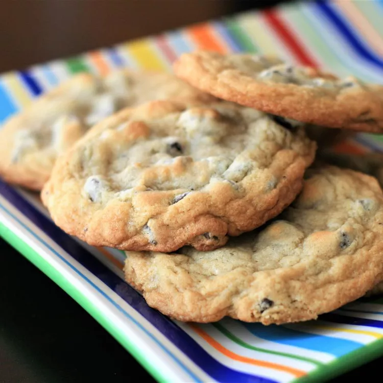

Best Chocolate Cookies

The Best Homemade Chocolate Chip Cookie
This chocolate chip cookie recipe makes delicious cookies with crisp edges and chewy middles.
Ingredients
Butter
Eggs
Vanilla
Baking soda
Water
Salt
Flour
Chocolate chips
Nuts (optional)
Steps
- Beat the butter and sugars, then beat in the eggs and vanilla.
- Dissolve the baking soda in hot water and add to the mixture.
- Stir in the flour, chocolate chips, and walnut.
- Drop dough onto a prepared baking sheet.
- Bake until the edges are golden brown.